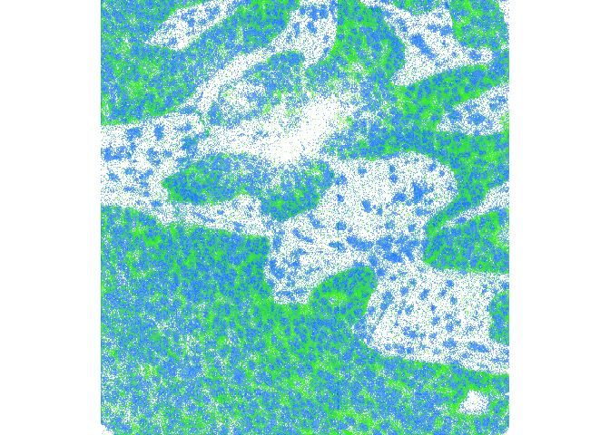

Mike L. Smith
Introduction to Rarr
The Zarr specification defines a format for chunked, compressed, N-dimensional arrays. It’s design allows efficient access to subsets of the stored array, and supports both local and cloud storage systems. Zarr is experiencing increasing adoption in a number of scientific fields, where multi-dimensional data are prevalent.
Rarr is intended to be a simple interface to reading and writing individual Zarr arrays. It is developed in R and C with no reliance on external libraries or APIs for interfacing with the Zarr arrays. Additional compression libraries (e.g. blosc) are bundled with Rarr to provide support for datasets compressed using these tools.
Limitations with Rarr
If you know about Zarr arrays already, you’ll probably be aware they can be stored in hierarchical groups, where additional meta data can explain the relationship between the arrays. Currently, Rarr is not designed to be aware of these hierarchical Zarr array collections. However, the component arrays can be read individually by providing the path to them directly.
Currently, there are also limitations on the Zarr datatypes that can be accessed using Rarr. For now most numeric types can be read into R, although in some instances e.g. 64-bit integers there is potential for loss of information. Writing is more limited with support only for datatypes that are supported natively in R and only using the column-first representation.
See the dedicated “Supported Zarr features” vignette for more information.
Quick start guide
Installation and setup
If you want to quickly get started reading an existing Zarr array with the package, this section should have the essentials covered. First, we need to install Rarr1 with the commands below.
## we need BiocManager to perform the installation
if (!require("BiocManager", quietly = TRUE))
install.packages("BiocManager")
## install Rarr
BiocManager::install("Rarr")Once Rarr is installed, we have to load it into our R session:
Rarr can be used to read files either on local disk or on remote S3 storage systems. First lets take a look at reading from a local file.
Reading a from a local Zarr array
To demonstrate reading a local file, we’ll pick the example file containing 32-bit integers arranged in the “column first” ordering.
zarr_example <- system.file(
"extdata", "zarr_examples", "column-first", "int32.zarr",
package = "Rarr"
)Exploring the data
We can get an summary of the array properties, such as its shape and datatype, using the function zarr_overview()2.
zarr_overview(zarr_example)## Type: Array
## Path: /tmp/RtmpF7Gmri/temp_libpath200434430aca/Rarr/extdata/zarr_examples/column-first/int32.zarr
## Shape: 30 x 20 x 10
## Chunk Shape: 10 x 10 x 5
## No. of Chunks: 12 (3 x 2 x 2)
## Data Type: int32
## Endianness: little
## Compressor: bloscYou can use this to check that the location is a valid Zarr array, and that the shape and datatype of the array content are what you are expecting. For example, we can see in the output above that the data type (int32) corresponds to what we expect.
Reading the Zarr array
The summary information retrieved above is required, as to read the array with Rarr you need to know the shape and size of the array (unless you want to read the entire array). From the previous output we can see our example array has three dimensions of size 30 x 20 x 10. We can select the subset we want to extract using a list. The list must have the same length as the number of dimensions in our array, with each element of the list corresponding to the indices you want to extract in that dimension.
index <- list(1:4, 1:2, 1)We then extract the subset using read_zarr_array():
read_zarr_array(zarr_example, index = index)Reading from S3 storage
Reading files in S3 storage works in a very similar fashion to local disk. This time the path needs to be a URL to the Zarr array. We can again use zarr_overview() to quickly retrieve the array metadata.
s3_address <- "https://uk1s3.embassy.ebi.ac.uk/idr/zarr/v0.4/idr0076A/10501752.zarr/0"
zarr_overview(s3_address)## Type: Array
## Path: https://uk1s3.embassy.ebi.ac.uk/idr/zarr/v0.4/idr0076A/10501752.zarr/0
## Shape: 50 x 494 x 464
## Chunk Shape: 1 x 494 x 464
## No. of Chunks: 50 (50 x 1 x 1)
## Data Type: float64
## Endianness: little
## Compressor: bloscThe output above indicates that the array is stored in 50 chunks, each containing a slice of the overall data. In the example below we use the index argument to extract the first and tenth slices from the array. Choosing to read only 2 of the 50 slices is much faster than if we opted to download the entire array before accessing the data.
z2 <- read_zarr_array(s3_address, index = list(c(1, 10), NULL, NULL))We then plot our two slices on top of one another using the image() function.
## plot the first slice in blue
image(log2(z2[1, , ]),
col = hsv(h = 0.6, v = 1, s = 1, alpha = 0:100 / 100),
asp = dim(z2)[2] / dim(z2)[3], axes = FALSE
)
## overlay the tenth slice in green
image(log2(z2[2, , ]),
col = hsv(h = 0.3, v = 1, s = 1, alpha = 0:100 / 100),
asp = dim(z2)[2] / dim(z2)[3], axes = FALSE, add = TRUE
)
Note: if you receive the error message "Error in stop(aws_error(request$error)) : bad error message" it is likely you have some AWS credentials available in to your R session, which are being inappropriately used to access this public bucket. Please see the section @ref(s3-client) for details on how to set credentials for a specific request.
Writing to a Zarr array
Up until now we’ve only covered reading existing Zarr array into R. However, Rarr can also be used to write R data to disk following the Zarr specification. To explore this, lets create an example array we want to save as a Zarr. In this case it’s going to be a three dimensional array and store the values 1 to 600.
path_to_new_zarr <- file.path(tempdir(), "new.zarr")
write_zarr_array(x = x, zarr_array_path = path_to_new_zarr, chunk_dim = c(10, 5, 1))We can check that the contents of the Zarr array is what we’re expecting. Since the contents of the whole array will be too large to display here, we use the index argument to extract rows 6 to 10, from the 10th column and 1st slice. That should be the values 96, 97, 98, 99, 100, but retaining the 3-dimensional array structure of the original array. The second line below uses identical() to confirm that reading the whole Zarr returns something equivalent to our original input x.
read_zarr_array(zarr_array_path = path_to_new_zarr, index = list(6:10, 10, 1))
identical(read_zarr_array(zarr_array_path = path_to_new_zarr), x)Required system libraries
To provide support for BLOSC and zstd compression tools Rarr links against libraries providing these tools. If you have them installed on your system Rarr will attempt to use those versions. If they are not detected then Rarr will compile and use versions that are distributed with the package. Either way the functionality will available, however if you are using the system libraries and then later remove them Rarr may fail to work correctly.
This only concerns users installing the package from source. If you are using the pre-built binaries for Windows or Mac OSX distributed by Bioconductor then this should not be an issue for you.